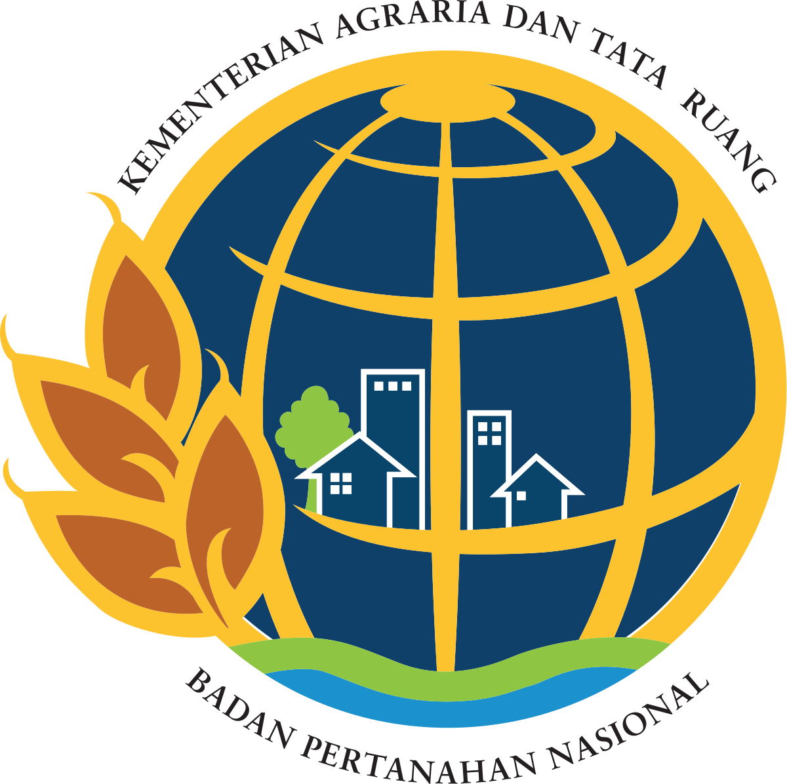

<!Doctype html>
<html>
    <head>
        <title>Peta Persebaran Sengketa</title>
    </head>
    <body>
		<center><p class= "logo">    
	</body>
</html>

<!DOCTYPE html>
<html>
	<head>
		<center>
        <p style="color:#e8af11; font-weight:bold; font-size:25px">
        	TENTANG KAMI
            <meta charset="UTF-8">
            <meta http-equiv="X-UA-Compatible" content="IE=edge">
            <meta name="viewport" content="width=device-width, initial-scale=1.0">
            <link rel="stylesheet" href="style-3.css">
		</center>
    </head>
	<body>
		<div class="container">
			<!--This is Sidebar-->
			<aside>
				<div class="sidebar">
					<a href="index-2.html" class="activetop">
						<span class="material-icons-sharp">
						</span>
						<h3>Beranda</h3>
					</a>
					<a href="Layanan.html">
						<span class="material-icons-sharp">
						</span>
						<h3>Panduan</h3>
					</a>
					<a href="https://docs.google.com/document/d/1N6iGWdiVuLuLgGA9wpG5np-zBd71mQUPCMQ8bSKeTQU/edit">
						<span class="material-icons-sharp">
						</span>
						<h3>Update Perkara</h3>
						<span class="material-icons-sharp">
						</span>
					</a>
					<a href="Tentang Kami.html">
						<span class="material-icons-sharp">
						</span>
						<h3>Tentang Kami</h3>
					</a>
					<a href="index.html">
						<span class="material-icons-sharp">
						</span>
						<h3>Logout</h3>
					</a>
				</div>
			</aside>
        <!--End of Sidebar-->


		<main>
			<p style="color:white; font-size:15px"; align="justify"> 
				<br> Berdasarkan Pasal 33 pada Permen ATR/Ka. BPN No. 17 Tahun 
				2020, Seksi Pengendalian dan Penanganan Sengketa mempunyai tugas 
				melaksanakan pengendalian hak tanah, alih fungsi lahan, wilayah pesisir, 
				pulau-pulau kecil, perbatasan dan wilayah tertentu, penertiban 
				penguasaan, pemilikan dan penggunaan, pemanfaatan tanah, dan 
				penanganan sengketa dan konflik, serta penanganan perkara pertanahan. 
				<br>Pelaksanaan tugas pada Seksi Pengendalian dan Penanganan 
				Sengketa terbagi menjadi 2 (dua) Koordinator Kelompok seperti pada 
				Permen ATR/Ka. BPN No. 38 Tahun 2016 yaitu Kelompok Jabatan 
				Fungsional pada Pengendalian dan Kelompok Jabatan Fungsional pada 
				Penanganan Sengketa.
				Setiap Kelompok Jabatan dikepalai Koordinator 
				yang memangku JF Penata Pertanahan yang mempunyai tugas dalam 
				melaksanakan penataan pertanahan yang meliputi kebijakan teknis 
				pertanahan, tenurial dan pengembangan pertanahan. JF Penata Pertanahan 
				melaksanakan Sub-unsur kegiatan tenurial, meliputi:
				<br> a. Penanganan masalah pertanahan;
				<br> b. Pengendalian dan pemantauan pertanahan; dan
				<br> c. Penertiban penguasaan, pemilikan, penggunaan dan pemanfaatan tanah.
			</p>

			<p style="color:hwb(90 97% 2%); font-size:15px"; align="justify"> 
			<br> Web berbasis GIS (Geographic Information System) Sengketa ini dikembangkan oleh para taruna
				Sekolah Tinggi Pertanahan Yogyakarta yang sedang menjalani program MBKM (Merdeka Belajar
				Kampus Merdeka) di Kantor Pertanahan Kota Surabaya I. WebGIS Sengketa ini dibuat dengan harapan
				dapat membantu Seksi Pengendalian dan Penanganan Sengketa Kantor Pertanahan Kota Surabaya I 
				dalam mengadministrasi data-data sengketa perkara pertanahan.
			</p>
			<p>
				<table>
					<tr>
				  		<td>
						
				  		</td>
				  		<td>
						
				  		</td>
					</tr>
				</table>
			</p>
		</main>
</html>
	<hr>
<!DOCTYPE html>
<html lang="en">
<head>
		<meta charset="UTF-8">
		<meta name="viewport" content="width=device-width,initial-scale=1.0">
		<title>footer</title>
		<link rel="stylesheet" href="style1.css">
</head>
<body>
	<footer>
			<div class="footer-bottom">
				<p> @Copyright Kementrian Agraria dan Tata Ruang/ Badan Pertanahan Nasional</p>
				<p> Designed by Tim MBKM STPN KANTOR PERTANAHAN KOTA SURABAYA I</p>
	</footer>
</body>
</html>
	